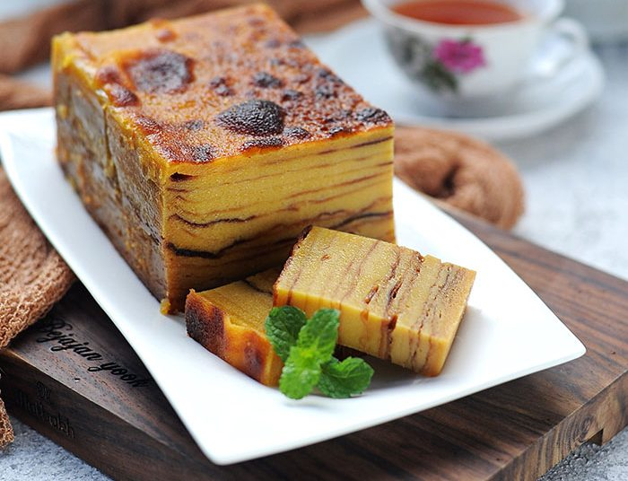

Maksuba

Sumber:
Maksuba
Maksuba kue lapisan khas palembang untuk momen istimewa
Maksuba adalah kue tradisional khas Palembang yang terkenal dengan teksturnya yang lembut dan rasa yang legit. Dibuat dari campuran telur bebek, mentega, dan susu kental manis tanpa tepung, Maksuba dipanggang per lapisan hingga membentuk tampilan yang cantik dan rasa yang khas. Biasanya disajikan saat hari raya, pernikahan, atau tamu kehormatan.
maksuba saat ini tersedia 2 ukuran

maksuba sedang | Rp 180.000
Sumber: maksuba sedang
Sumber: maksuba sedang
Ukuran sedang
cocok dimakan dengan kelurga, ukuran sedang ini berukuran 16*6cm. jumlah lapisan 14 lapisan

maksuba besar | Rp 250.000
Sumber: maksuba besar
Sumber: maksuba besar
Ukuran besar
cocok untuk acara,hajatan dan hari raya, ukuran besar ini berukuran 22*8cm. jumlah lapisan 20 lapisan
← Kembali ke Halaman Utama